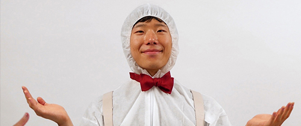

Noam Youngrak Son is a designer based in Ghent and Eindhoven.
They inscribe myths for the underrepresented in various mediums, from books to performances to 3D printed sex toys. They are excited about the unexpectedness that a well-designed fiction can open up, and critical political discussions that it may cultivate.
Design Academy Eindhoven, Man & Communication BA, Cum Laude, 2017-2021
Gyeongsan Science Highschool, Advanced Placement: Biology, 2014-2017
d-act, Self-run design service & publishing agency, 2018-now
Studio Plastique Design research intern, 2020-2021
Queer Constituency at Van Abbe Museum, Event facilitating, Researching, 2018-2020
Designmatter, Seoul based design agency, Remote Researcher, 2019-2020
Upcoming
ALIENATED, At 38CC, Delft, Showing: Hotel Symbiogenesis
2021
Interspecies Futures, At the Center for Book Arts, New York, Showing: Publications "Hotel Symbiogenesis", "Becoming a bat, embodying COVID-19"
2020
DDW WATTBA 2020, At Temporary Art Center, Eindhoven, Showing: Hotel Symbiogenesis, In collaboration with Designmatter, As a member of Hypothetical Studios
(IM)POSSIBLE BODIES, Curated by Stichting Niet Normaal, Showing: Money in vivo
The Self Design Academy, At MU Hybrid Art Space, Eindhoven, Showing: Self Design Committee
Sensual Havoc, At Broedplaats LELY, Amsterdam, Showing: The Gendered Cable Manifesto
2019
Qtopia Nijmegen Queer Art Festival, At various venues including NEUS, Nijmegen, Showing: Queerlet, Designed a toilet signage system for the festival
Ristorante di Attenzione, Participatory performance, Eindhoven
DDW Embassy of Health, At Klokgebouw, Eindhoven
Department of sexual revolution studies, at Van Abbe Museum, Eindhoven, Designed props for the performance of Eimar Walshe
2018
DDW Made in Egalia, At Plug-in-City, Eindhoven, in collaboration with Alice Watel and Day Day Gay
2021
Interspecies Publications Post COVID-19 panel, At the Center for Book Arts, New York
Design-symposium Kompliz*innen, Hosted by FemPower Burg Halle, Halle
The Reality of Symbiosis podcast, Hosted by Future Based
Talks about self design, Hosted by MU Hybrid Art Space, Eindhoven
2020
KD—LOUNGE lecture, A public lecture organized by The Hochschule Konstanz
Designing Symbiogenesis, At TAC, Eindhoven
Film screening, Q&A: Money in Vivo, At (IM)POSSIBLE BODIES Festival
The Hmm on Facial Recognition panel, At Felix Meritis, Amsterdam
The Hmm at Hackers & Designers, At Tetem, Amsterdam
2019
The Gendered Cable Manifesto reading event, At Van Abbe Museum
Queerlet Drawing workshop, At Van Abbe Museum
Egalia Fairytale Party workshop, At Van Abbe Museum and Plug in City
2021
Kont Magazine, Artists help grow gigantic mushrooms!?, With Jeroen van den Heuvel
U+ZINE 5, “History” by Plurality University Network, Money in vivo
2020
The Hmm Dossier, The Self Design Committee: How a face filter might or might not democratize self-design
Depatriarchise Design, Creating Myths from the Margins. A Conversation with Noam Youngrak Son
CLOT Magazine, The Gendered Cable Manifesto
Future Based, Becoming a bat. Embodying COVID-19: SF ways of fighting helplessness confronting the pandemic.
Can be found on Cathair Press.
Clot Magazine, Damn Magazine, Designdigger, Domusweb, Dutch Design Daily, e-flux, Formfaktor, Het Ma:dang, Plokta TV, The Brooklyn Rail, Thesignspeaking, Trendland